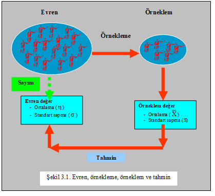
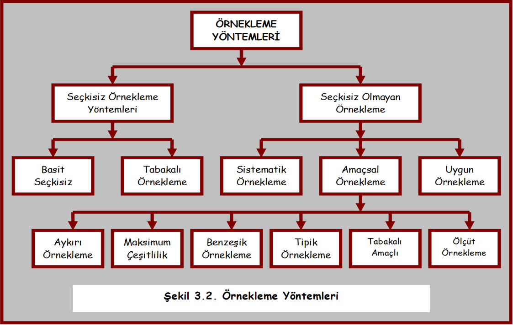
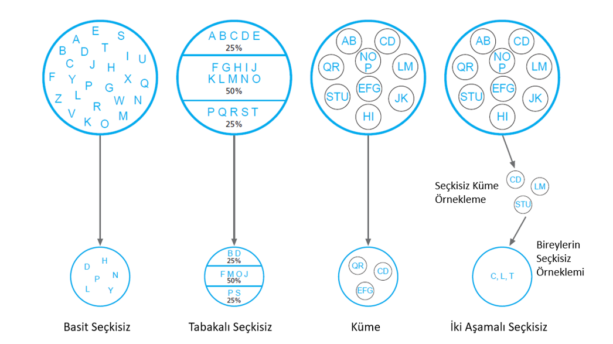
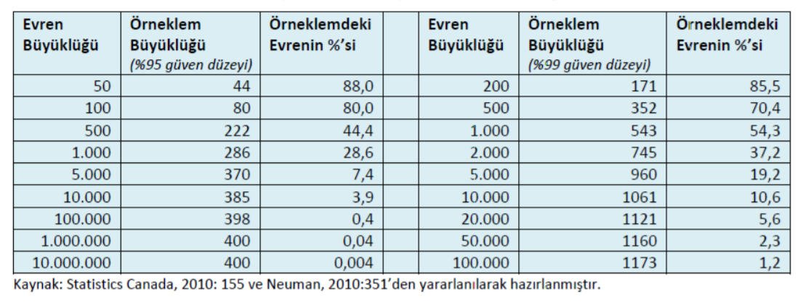

💪 EGİTİMDE ARAŞTIRMA YÖNTEMLERİ
📊 Örnekleme Yöntemleri
Örnekleme Yöntemleri .huge[📊]
İçerik
- Evren - Örneklem Tanımı Örnekleme Nedir?
- Örnekleme Yöntemleri
- Örnekleme Aşamaları
- Örneklem Büyüklüğü
- Örnekleme Hatası
🎯 Örnekleme Yöntemleri
Öğretmen adaylarının mezuniyet notları ile KPSS puanları arasındaki ilişkiyi incelemek isteyen bir araştırmacı….
“Tüm öğrencileri ölçmek mümkün olsaydı araştırma yapmaya gerek kalır mıydı?”
Zaman, maliyet, ulaşılabilirlik sorunları nedeniyle evren yerine örneklem kullanılır.
Ama örneklem evreni ne kadar temsil ederse, sonuçlar o kadar güvenilir olur.
🧠 Evren
Evren, araştırma sonusunda elde edilecek sonuçların geçerli olacağı gruptur. Parametre, evreni betimlemek için kullanılan değerlerdir.
İlköğretim öğrencilerinin ders çalışma stratejileri ile ders başarıları arasında ilişki var mıdır? Hedef evren
Ankara’daki ilköğretim beşinci sınıf öğrencilerinin ders çalışma stratejileri ile ders başarıları arasında ilişki var mıdır? UlaşılabilirEvren
Hedef evren, araştırmacının ulaşmak istediği, ancak ulaşması güç olan ve ideal seçimini yansıtan soyut evrendir. Ulaşılabilir evren, araştırmacının ulaşabileceği, gerçekçi seçimi olan somut evrendir (Büyüköztürk vd., 2018)
Hedeflenen Evren ve Ulaşılabilir Evren
Araştırma problemi: Bilgisayar destekli öğretimin Ankara’daki birinci ve ikinci sınıf öğrencilerinin okuma başarısına etkisi nasıldır?
Hedeflenen evren: Ankara’daki tüm birinci ve ikinci sınıf öğrenciler.
Ulaşılabilir evren: Ankara, Eryaman semtindeki tüm birinci ve ikinci sınıf öğrencileri.
Örneklem: Ankara, Eryaman’daki birinci ve ikinci sınıf çocukların yüzde onu.
Hedeflenen Evren ve Ulaşılabilir Evren
Araştırma problemi: İkinci sınıf öğretmen adaylarının eğitimde araştırma yöntemleri dersine karşı tutumları nasıldır?
Hedeflenen evren: Türkiye’de eğitim fakültelerine kayıtlı tüm ikinci sınıf öğrencileri.
Ulaşılabilir evren: Hacettepe Üniversitesi Eğitim Fakültesi’ne kayıtlı tüm ikinci sınıf öğrencileri.
Örneklem: Hacettepe Üniversitesi Eğitim Fakültesi’ne kayıtlı olanlardan seçilen yüz ikinci sınıf öğrencisi
Evren
- Maddi nedenler,
- Zaman kısıtlılığı ya da
- Bütüne ulaşmanın mümkün olmaması
gibi nedenlerden bütünden belirli bir parça alınarak araştırma yürütmek tercih edilir (Gentles, Charler, Ploeg ve McKibbon, 2015; akt: Şahin ve Karakuş, 2019).
Örneklem ve Örnekleme Nedir?
Örneklem, çalışılan evrenden seçilen sınırlı bir parçadır.
Örnekleme, evreni temsil edecek uygun örneklemi seçme sürecidir.
Örnekleme birimi, örneklemi oluşturmada temel alınan birim.
Gözlem birimi, hakkında bilgi toplanan, evrenin en küçük parçasıdır.
İstatistik, örneklemden elde edilen verilerden hesaplanan değerlerdir.
Örnekleme Yöntemleri
Araştırmalar, çoğunlukla, belli bir evrene genellemek amacıyla, evrenden yansızlık kuralına göre seçilen küçük örnek gruplar üzerinde yapılır.
Araştırmanın ilgili olduğu evren ile üzerinde çalışılan örneklemin önemli özellikleriyle (sayı, yaş, ağırlık vs.) raporda belirlenip tanımlanması ve sınırlandırılması gerekir.
Ayrıca, örnekleme türü, örneklem büyüklüğü ve bunun tahmininde kullanılan teknik, güven ve hata sınırlarının neler olduğu, gerekçeleriyle açıklanmalıdır.
Örnekleme Hatası
Evrenden elde edilen değerlere dayalı sonuç ile örneklemeden elde edilen değerlerden yapılan tahmine dayalı sonuç arasındaki farka denir.
Verilerin toplanmasında kullanılan ölçme aracından,
Ölçülen özellikten,
Veri toplayan kişiden,
Verilerin toplanma sürecinden,
Verilerin toplandığı ortamdan vb.
Örneklem Almanın Faydaları
Fricker’e (2008) göre;
- Daha düşük maliyet,
- Uygulayıcının daha az çaba harcaması,
- Yüksek cevap alma oranı,
- Daha fazla geçerlik (akt: Şahin ve Karakuş, 2019).
Evren, Örnekleme ve Örneklem (Büyüköztürk vd, 2018)
Evren ile örneklem arasındaki farkın olabildiğince az olması beklenir.
Evrenden doğru bir şekilde seçilmeyen örneklemler bir takım sorunların meydana gelmesine sebep olur.
Örneklemden elde edilen değerlerin evrene genellenebilir olması için örneklemin olabildiğince doğru seçilmiş olması gerekir (Şahin ve Karakuş, 2019).
Örnekleme Yöntemleri
- Seçkisizlik, örneklemede temel alınan birimlerin örneklem için seçilme olasılıklarının eşit olmasıdır. Bu ilke, birimlerin örnekleme seçilme durumlarının birbirinden bağımsız olmasıyla da ilgilidir.
Seçkisiz ve Seçkisiz Olmayan Örnekleme
Seçkisiz (rastgele, tesadüfi, olasılıklı) örnekleme yöntemleri, araştırma evrenindeki tüm bireylerin seçilme şanslarının eşit olduğu örnekleme yöntemleridir. Tüm evren açıklanmak istenildiğinde kullanılır.
Seçkisiz olmayan (olasılıklı olmayan) örnekleme yöntemleri, araştırma evrenindeki bireylerin seçilme şansının ifade edilmesi mümkün değildir. Betimleme yapılmak istenildiğinde kullanılır.
Seçkisiz ve Seçkisiz Olmayan Örnekleme
Ankara merkezli bir gıda şirketinin insan kaynakları müdürü, şirketindeki çalışanların çalışma şartları hakkında ne düşündüklerini öğrenmek istiyor.
Şirket çalışanlarının tümü olan 250 ismini bir şapkaya koyar, iyice karıştırır ve ardından görüşmek için 40 kişinin ismini çıkarır. Seçkisiz Örnekleme
Şirket merkezine konum olarak yakın olan ofisteki 40 çalışan ile görüşme yapar. Seçkisiz Olmayan Örnekleme
Örnekleme Yöntemleri (Büyüköztürk vd, 2018)
Seçkisiz
Matematikteki olasılık kuramına dayalıdır.
Örneklem olasılık yöntemleriyle seçilir.
Bu yöntem ile örneklemin evreni temsil etme düzeyi diğerlerine göre daha yüksektir.
Genelleme yapılabilmesi için bu yöntemin kullanılması zorunluluktur.
Bu yöntem ile örneklemin büyüklüğü hesaplanabilir, evrenden sapma hatası ölçülebilir.
Evrende her bir birimin örneklemeye seçilme olasılığı eşittir.
Seçkisiz Olmayan
Olasılığa dayanmayan yöntemdir.
Araştırmacının isteği, yargısı ve deneyimi örneklem birimlerinin seçiminde ve örneklem hacminin tespitinde belirleyicidir.
Subjektif bir seçim sözkonusudur.
Kullanımındaki temel motivasyon kolaylığı ve ekonomik olmasıdır.
Bu yöntemle oluşturulan örneklemden elde edilen bilgiler ile evren hakkında çıkarım yapılamaz, genelleştirilemez.
🔍 Örnekleme Yöntemlerinin Karşılaştırması
| Özellik | Seçkisiz Örnekleme 🎲 | Seçkisiz Olmayan Örnekleme 🎯 |
|---|---|---|
| Temsil Gücü | Yüksek | Düşük |
| Genelleme İmkanı | Var | Genelleme yapılmaz |
| Kullanım Alanı | Nicel | Nitel |
| Seçim Kriteri | Olasılığa dayalı | Araştırmacı yargısı |
Seçkisiz Örnekleme Yöntemleri (Fraenkel vd., 2012)

Basit Seçkisiz Örnekleme
Her bir örnekleme biriminin eşit seçilme olasılığı söz konusudur.
Seçkisiz örnekleme ile temsil gücü en geçerli ve en iyi örneklem belirlenir.
Olasılık ihtimali arttığından örneklem istatistiğinin sonuçlar bazında araştırmacılara daha çok yardım eder (Şahin ve Karakuş, 2019).

(Büyüköztürk, vd, 2018)
Tabakalı Örnekleme (Büyüköztürk vd, 2018)
Tabakalı örnekleme, evrendeki alt grupların belirlenir ve bu alt grupların ağırlık oranları örneklemede temsil edilir.
Alt evrenlerden birim çekme işlemi basit seçkisiz örnekleme ile gerçekleştirilir.
Alt tabakalar için ayrı sonuçlar oluşturulabilir ve bu durum da tabakalar arası karşılaştırmaların yapılabilmesine olanak sağlar (Şahin ve Karakuş, 2019).

** 🛠️ Tabakalı Örnekleme (Büyüköztürk vd, 2018)**
- Farklı meslek gruplarının meslek tatminine ilişkin bir araştırmada 10 kişiden görüş alınmak istenilmektedir.100 kişiden oluşan meslek grubu topluluğu 30 öğretmen, 40 mühendis ve 30 doktordan oluşmaktadır.
- Öğretmen: ?
- Mühendis: ?
- Doktor: ?
Tabakalı Örnekleme (Büyüköztürk vd, 2018)
- Özellikle örneklem sayısının çok büyük olmayacağı durumlarda temsil olasılığını arttırması bir avantaj iken, araştırmacıların daha fazla çaba sarf etmelerine sebep olması bir dezavantajdır.
Seçkisiz Olmayan Örnekleme Yöntemleri

Sistematik Örnekleme
Birimlerin belli bir sistematik izlenilerek aralık büyüklüğü (Evren büyüklüğü/Örneklem büyüklüğü) ve başlangıç noktasına (rastgele belirlenir) dayalı örnekleme seçilmesidir.
Örneğin 100 okuldan 10 okul belirlenecek ise aralık genişliği 100/10=10 dur. Daha sonra 1-10 arası rakamlardan bir tanesi rastgele belirlenir. Örneğin 6 belirlenirse; sırayla 6-16-26-36-46-56-66-76-86-96. okullar örnekleme seçilebilir.
Amaçsal Örnekleme
Çalışmanın amacına bağlı olarak bilgi açısından zengin durumların seçilerek araştırma yapılmasına olanak tanır.
Araştırmacı çalışmanın amacına uygun evreni temsil ettiğini düşündüğü örneklemi seçer ve seçilen örneklem araştırmacının sahip olduğu ön bilgiye bağlıdır.
Oluşabilecek tek sorun araştırmacının ön görüsünde yanılma ihtimalidir.
Nitel araştırmalarda en çok tercih edilen yöntemdir (Şahin ve Karakuş, 2019).
Amaçsal Örnekleme
Aykırı durum örnekleme
Maksimum çeşitlilik örnekleme
Benzeşik örnekleme
Tipik durum örnekleme
Tabakalı amaçsal (kota) örnekleme
Ölçüt örnekleme
Maksimum çeşitlilik örnekleme
- Ortaokul 5. sınıf yabancı dil ağırlıklı yeni öğretim programlarında karşılaşılan sorunları incelemeyi amaçlayan araştırmacının farklı sosyo-ekonomik özelliğe sahip bölgelerden okulları seçebilir.
Tipik durum örnekleme
Bir araştırmacı Ankara ili kent merkezindeki resmi ilköğretim okullarındaki öğretmenlerin ve velilerin yeni öğretim programlarının uygulanmasına ilişkin tutumları incelemek için çok sayıda okul yerine sıra dışı özellik göstermeyen bir ya da iki okulda araştırmasını yürütebilir.
Tabakalı amaçsal (kota) örnekleme
Bir anket şirketi, İstanbul’u 10 ayrı bölgeye ayırarak kişilerin sağlıklı beslenme ile ilgili görüşlerini toplamaktadır. Bunun için 10 ayrı bölgeden anketörün kişisel yarıgısına dayalı olarak karar verilen belirli sayıda kişi seçilebilir.
Aykırı durum örnekleme
Başarı ve başarısızlık olgularını alnamaya ve açıklamaya çalışan araştırmacı, örneklemini amacına bağlı olarak öğrenci başarısının en yüksek ya da en düşük olduğu okulları seçebilir.
Benzeşik örnekleme
Aileleri tarafından istismar ve ihmal edilen çocukların gelişimsel özellikleri incelenirken, bu tür davranışların görece olarak daha fazla gözlemlendiği gruplar örnekleme alınabilir.
Ölçüt örnekleme
Eğitim alanında yapılan ölçek geliştirme makalelerini inceleyen bir araştırmacı örneklemini sadece ULAKBİM’de yayınlanan makaleler olarak belirleyebilir.
Uygun Örnekleme
- Zaman, para ve işgücü açısından var olan sınırlılıklar nedeniyle örneklemin kolay ulaşılabilir ve uygulama yapılabilir birimlerden seçilmesidir.
- Örneklemin temsil gücü düşüktür ve araştırmacılar tarafından pek önerilmez. Örneğin bir araştırmacının çalıştığı iş yerine yakın öğrencileri örneklem olarak alması.
Örnekleme sürecinin aşamaları:
Çalışma evreninin tanımlanması
Evrendekilerin listelenmesi
Örnekleme yönteminin belirlenmesi
Örneklem büyüklüğünün kararlaştırılması
Örneklemin alınması
Temsilliğin sınanması
Evrenin Belirlenmesi
Örneklem seçmedeki ilk görev, ilgilenilen evreni tanımlamaktır.
Türkiye’deki tüm matematik öğretmenleri,
İç Anadolu’daki tüm ortaokul müdür yardımcıları,
2020–2021 akademik yılında Ankara Fen Lisesi’ne devam eden tüm öğrenciler,
Atatürk İlkokulu üçüncü sınıf sınıfındaki tüm öğrenciler
Örnekleme Türünün Belirlenmesi
Araştırmada kullanılacak yöntem,
Araştırmanın yapıldığı alan,
Araştırmanın amacına göre değişkenlik gösterir.
Olasılık ve amaç temelli örneklem belirleme;
Olasılık temelli ⏯ Evrene yönelik tahmin, genelleme
Amaç temelli⏯ Araştırma sonucuna göre açıklama yapma
Nicel ve Nitel Araştırmalarda Örneklem
Araştırmanın yöntemi, evren ve örneklem tercihinde etkili olan bir faktördür.
Nicel araştırmalarda ⏯Örneklem geniş bir evrene genellenir, evren büyük olarak tanımlanır.
Nitel araştırmalarda ▶️Seçilen örneklem daha küçüktür, seçkisiz olmayan örnekleme yöntemi kullanıldığı düşünülürse geniş bir evreni temsil etmesi beklenmez, evren daha küçük tanımlanır (Vanderstoep ve Johnston, 2009; akt: Şahin ve Karakuş, 2019).
Örneklem Büyüklüğü
Örneklem ve evren arasında bazı farklılıklar olması kaçınılmazdır, ancak örneklem seçkisiz olarak seçilirse ve yeterli büyüklükteyse, bu farklılıklar muhtemelen görece önemsiz ve rastlantısal olacaktır.
Yeterli örneklem büyüklüğü nedir?
Örneklem Büyüklüğü
Örneklemin olması gerekenden fazla olması, para ve zaman kaybına yol açar.
Küçük olması ise sonuçların doğruluğunu ve güvenirliğini azaltır.
Örneklem büyüklüğünün belirlenmesinde farklı formüller geliştirilmiştir.
Örneklem Büyüklüğü
Örneklemden elde edilecek tahminlerin evrenin gerçek değerinden ne kadarlık bir sapma göstermesinin kabul edileceği sapma düzeyi (d) saptanır.
Güven düzeyi (1-a) ve buna karşı gelen t değeri belirlenir.
Örneklem Büyüklüğü
Örneklem büyüklüğünü belirlemede
Araştırmanın türü
Araştırmanın deseni
Değişken sayısı
Veri analiz yöntemleri
Tahmin için kabul edilen güven düzeyi
Sapma miktarı
Analiz birimi dikkate alınır.
Örneklem Büyüklüğü
Örneklem Büyüklüğü
- Betimleyici çalışmalar ▶️ Minimum 100
- Korelasyon araştırmaları ▶️ Minimum 50
- Deneysel ve nedensel karşılaştırmalı araştırmalar ⏯ Grup başına en az 30 kişi, ancak bazen her grupta sadece 15 kişiyle yapılan deneysel çalışmalar, çok sıkı bir şekilde kontrol edilirse savunulabilir (Fraenkel vd., 2012).
Örneklem Büyüklüğü
Nitel araştırmalarda örneklem büyüklüğüne karar vermek nicel araştırmalara göre daha zordur.
Amaçlı örneklemede her çalışmanın amacı temel alınarak örnekleme yöntemi ve büyüklüğüne karar verilmelidir.
Nitel araştırmalarda, bir örneklemdeki katılımcı sayısı genellikle 1 ile 20 arasındadır (Fraenkel vd., 2012).
Örneklemin Evreni Temsil Etmesi
Evreni oluşturan tüm birimler aynı özellikleri taşısaydı o zaman tek bir örnek seçmek yeterli olurdu, ama değil Örnekleme seçilen deneklerin özellikleri evreni oluşturan deneklerin özelliklerine yakın olmalıdır.
Büyük örneklemler küçük hata üretir.
Benzeşik evren küçük hata üretir.
Örneklem bulgularından evrene genelleme yapılır.
Örneklem evreni ne kadar iyi temsil ederse genellemeler de o kadar isabetli olur.
Temsilliğin sınanması
Örnekleme yapıldıktan sonra, yansızlık kuralının ne ölçüde çalıştığı, örneklemin evreni ne ölçüde temsil edebildiği bilinmek istenir.
Bu amaçla, örneklemdekilerle evrendekilerin bilinen bazı özellikleri karşılaştırılır (cinsiyet oranları, yaş dağılımları vb)
🤔 Hangi yöntem
Amacı öğrenci başarısındaki eğilimi izlemek ve ulusal eğitim sistemleri arasındaki farklılıkları belirlemek olan TIMSS araştırmasının ülkemiz evrenini Türkiye’deki tüm 4. ve 8. Sınıf öğrenciler oluşturmaktadır. Örnekleme sürecinde; okul türleri dikkate alınıp her bir okul türünün evrendeki oranı korunarak örneklemin seçilmesi amaçlanmaktadır.
🤔 Hangi yöntem
Lise 1. sınıf düzeyinde eğitim görmekte olan başarılı ve başarısız öğrencilerin ders çalışma alışkanlıklarının anlaşılmasına yönelik bir durum çalışması planlayan araştırmacı çalışma grubunu belirlerken incelenen değişkenliği daha net görebilmek için problemi en iyi temsil eden zıt durumları seçmek istemektedir
🤔 Hangi yöntem
750 kişinin çalışmakta olduğu özel bir sağlık kurumunda, çalışanlarının örgütsel bağlılık düzeylerini belirlemeyi amaçlayan bir müdür yardımcısı kurumda en az beş yıldır görev yapmakta olan toplamda 463 kişiye örgütsel bağlılık ölçeğini göndermiştir.
🤔 Hangi yöntem
İlkokul öğrencilerinin çevre kirliliğine karşı tutumlarını belirlemek amacıyla bir ölçme aracı geliştiren araştırmacı ölçme aracının deneme uygulamasına ait geçerlik ve güvenirlik değerlerini ders vermekte olduğu sınıfın öğrencilerinden elde ettiği veriler ile hesaplamıştır.
🤔 Hangi yöntem
Bir devlet üniversitesindeki öğretim elemanlarının iş doyum düzeyini etkileyen değişkenlerin belirlenmesini amaçlayan bir araştırmada örneklem seçilirken üniversitede çalışan öğretim elemanlarının tümünün bulunduğu bir listeden özel bir yazılım kullanılarak eşit seçilme olasığı ilkesine dikkat edilerek tesadüfi olarak belirlenmiştir.
📚 Yararlanılan Kaynaklar
Büyüköztürk, Ş., Kılıç Çakmak, E., Akgün, Ö.E., Karadeniz, Ş. ve Demirel, F. (2018). Eğitimde Bilimsel Araştırma Yöntemleri. Ankara: Pegem Akademi
Frankel, J. R.; Wallen, N. E. & Hyun, H. H. (2012). How to Design and Evaluate Research in Education (8th Edition). New York: McGraw Hill International.
Şahin, Ç, ve Karakuş, G.(2019).Katılımcıları Seçme: Evren ve Örneklem: Tanrıöğen, A. (Ed.) Eğitimde Bilimsel Araştırma Yöntemleri içinde (sf:179-216). Ankara: Pegem Akademi
Dr.Kübra Atalay Kabasakal